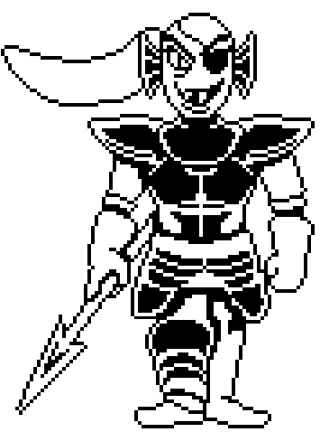

Undyne
Undyne (/ˈʌn.daɪn/, UN-dyne) é a líder da Guarda Real dos monstros. Vestida em sua armadura, ela persegue o protagonista por toda Waterfall, e este frequentemente foge dela, ou ela tem suas tentativas frustradas sem aviso prévio por Monster Kid que a segue para todo lado, com o objetivo de vê-la lutar.

Índice
-
História
-
Aparência
-
Personalidade
-
Relações
-
Referências
Undyne
Informações
-
Conhecida como:
Undyne, a Imortal
-
Jogo:
Undertale
-
Espécie:
Monstro Humanoide Peixe
-
Idade:
?
-
Altura:
?
-
Ocupação:
Líder da Guarda Real
-
Relações:
Alphys (interesse amoroso)
Asgore (amigo/chefe)
Papyrus (amigo) -
Sexualidade:
Queer
-
Gênero:
Feminino
-
Pronomes:
Ela/dela
-
Nacionalidade:
?
História
Undyne é mencionada diversas vezes em Snowdin, principalmente por Papyrus, mas só aparece pela primeira vez em Waterfall, onde aparece no topo de uma elevação. Aqui, Papyrus tenta convencê-la a não machucar o humano, mas sem sucesso. Enquanto o/a protagonista prossegue, o farfalhar da grama faz com que Undyne se aproxime da elevação e quase jogue uma lança em Frisk, mas ela não o faz no final, e desaparece.
Ao longo de Waterfall, Undyne persegue Frisk, e o/a ataca repetidamente, mesmo que ele/a sempre consiga fugir da captura ao se esquivar de seus ataques, ou quando Monster Kid interfere sem aviso prévio nas tentativas de Undyne de capturar o humano.
Perto do final de Waterfall, Undyne aparece quando Monster Kid tropeça e cai da ponte. Se Frisk salvar Monster Kid, ele o/a protege; se ele/a não salvá-lo, Undyne o fará em vez disso. Isso faz ela tomar certo dano, e seu HP diminui.
Após isso, Undyne confronta Frisk, e começa um discurso, mas o encurta (de acordo com ela, porque esqueceu o que ia dizer), e inicia, confiante, uma batalha. Aqui, o jogador pode ou matá-la ou fugir dela até chegar em Hotland.
Uma vez chegando em Hotland, o calor da armadura de Undyne a faz desmaiar. A este ponto, há a opção de trazer um pouco de água para ela de um bebedouro ali perto, ou derramar toda a água de propósito na frente dela. Uma vez refrescada, Undyne se levanta, fica parada por algum tempo e volta a Waterfall prontamente.
Caso ela for morta em batalha, Undyne resiste à morte com a Determinação e prende o protagonista. Todavia, a Determinação dela sai pela culatra, a fazendo, por fim, derreter lentamente e virar pó.
Aparência
Undyne é um monstro humanoide peixe, com escamas azuis e um rabo de cavalo vermelho, longo e brilhante. Ela tem nadadeiras no lado da sua cabeça e um par de dentes salientes. Ela usa um tapa-olho no seu olho esquerdo. Ela tem olhos amarelos; no entanto, quando ela está letalmente danificada, seus olhos ficam pretos. Ela veste uma camisa preta, uma calça azul escura, botas vermelho escuro com fivelas douradas, luvas azuis e sua armadura é cinza.
Personalidade
Muitos habitantes do Subsolo compartilham opiniões divergentes sobre Undyne, sendo vista como rude, briguenta e violenta por alguns, mas determinada, forte e valente por outros. Ela é uma guerreira de personalidade brusca e heroica, querendo sempre proteger e honrar todos aqueles que ama. Ela também se mostra extremamente determinada sendo capaz de tudo para alcançar seus objetivos. Ela se mostra um alguém extremamente orgulhoso e sempre quer se mostrar forte e capaz.
Relações
Alphys
Undyne e Alphys tem uma queda uma pela outra. Undyne encontrou pela primeira vez Alphys no Lixão, escutando durante horas sobre onde ela achava que aquele abismo lá levava. Os dois se tornaram amigos íntimos logo depois, com Alphys apresentando-a ao anime em algum momento. Elas freqüentam freqüentemente, e Alphys usa Erva marinha durante a Waterfall para fazer um deleite gelado especial para Undyne. Alphys e Undyne também trabalharam juntos para criar alguns dos quebra-cabeças em Cachoeira.
Elas quase se beijam na Rota do Verdadeiro Pacifista, mas Toriel os interrompe e lhes diz para não se beijarem na frente do protagonista.
Papyrus
Undyne pensa em Papyrus como um amigo próximo. Ela está impressionada com a sua persistência e treina ele para cozinhar, mas está preocupado com o seu bem-estar e secretamente não quer que ele se junte a Guarda Real, porque ela acredita que ele é muito gentil para lutar. Ela ensina ele como cozinhar na esperança de que ele muda de idéia sobre se juntar à Guarda Real. Undyne às vezes gosta de brincar com Papyrus, mas ela muitas vezes esquece que ele costuma levar as coisas muito a sério. Ela fica triste e enfurecida se o protagonista mata Papyrus durante uma Rota Neutra / Genocídio.
Asgore
Mesmo que Asgore é seja seu chefe, Undyne vê-lo como um amigo que sabe o seu tipo favorito de chá. Quando era mais nova, Undyne desafiou Asgore a uma luta mas não conseguiu acertar um único golpe nele. Ela foi humilhada porque ele não lutou e apenas esquivou de seus ataques. Asgore então se ofereceu para treinar Undyne e eventualmente a promoveu a chefe da Guarda Real.
Depois de Bolas de fogo Toriel Asgore na Rota do Pacifista Verdadeiro, Undyne consola-lo porque ele está chorando.
Napstablook
Eles vivem no mesmo bairro. Ele é intimidados por ela, mas ela tenta ser um bom vizinho para ele. Ela parece preocupada por ele estar sozinho depois que seu primo saiu e diz ao protagonista para ser bom para com ele.
Mettaton
Undyne não sabe que Mettaton é o primo de Napstablook. Ela tem uma aversão por ele, e ela não gosta de seu show.
Shyren
Undyne costumava dar aulas de piano para Shyren, mas um dia ela parou de vir - provavelmente depois que sua irmã caiu.